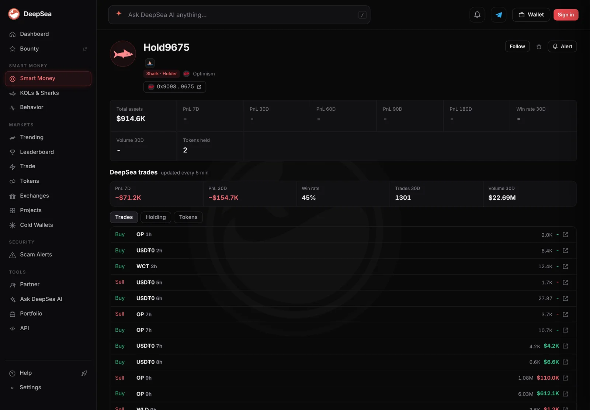
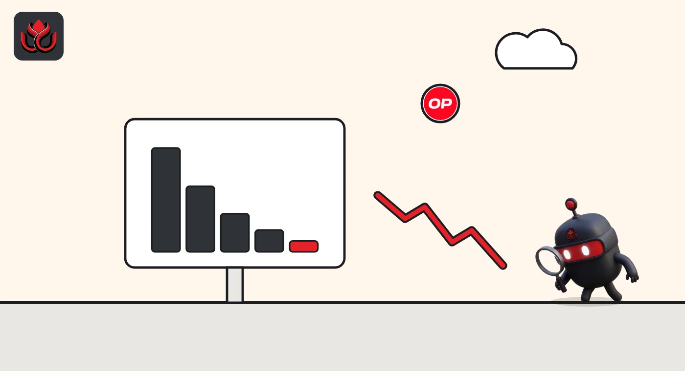

A shark bought $612,100 of OP in one trade. Nine hours later its wallet held no OP
An Optimism wallet DeepSea calls Hold9675 bought 6.03 million OP on Saturday night, about 3% of the token's daily trading. Its page now shows no OP among its holdings.
Key points
- About nine hours before 6:45 a.m. ET on November 8, shark wallet Hold9675 bought 6.03 million OP for $612,100 on Optimism, DeepSea shows. It sold 1.08 million OP for $110,000 soon after, and its holdings now list only WLD and USDT0.
- Across 24 hours, nine shark wallets bought $1.09 million of OP and sold $1.14 million, nearly even. On November 4, sharks sold $3.55 million and bought $486,000.
- OP traded at $0.1016 on CoinGecko, down 10.4% in a week and about 98% below its March 2024 high of $4.84.
 What DeepSea's data shows
What DeepSea's data shows
DeepSea labels the wallet Hold9675, a shark on Optimism with the address ending in 9675. Its wallet page, read at about 6:45 a.m. ET on November 8, 2026, lists a buy of 6.03 million OP for $612,100 about nine hours earlier, and a sale of 1.08 million OP for $110,000 soon after (eight to nine hours earlier). Later entries are small: 10,700 OP bought, 3,700 sold, then 2,000 bought an hour before our read.
The wallet's record is weak: minus $71,200 over 7 days and minus $154,700 over 30 days, a 45% win rate, 1,301 trades and $22.69 million of volume in 30 days. Its page shows total assets of $914,600 in two tokens, WLD ($792,000) and USDT0 ($123,000), with no OP. The same list shows it sold 5.21 million OP for $533,100 about 23 hours before our read, the day before the big buy. DeepSea's 24-hour table (6:36 a.m. ET) has it buying $741,690 and selling $694,995 across 23 trades, so it sold almost as much as it bought over the day.
For OP as a whole on Optimism, the same table shows nine shark wallets buying $1,086,267 and selling $1,137,283 in 71 trades.

Data: DeepSea (desea.io), checked November 8, 2026, 6:45 a.m. ET.
How big the buy was
The price in the trade, about $0.1015 per OP, matches CoinGecko's $0.1016 at 6:46 a.m. ET. CoinGecko put OP's 24-hour trading at $19.44 million across all markets, so the $612,100 buy alone was about 3.1% of a day's volume. The 6.03 million tokens equal about 0.26% of OP's 2.29 billion circulating supply. OP's market value was $232.76 million.
Shark OP trading on Optimism, 24 hours
US$ thousand
Source: DeepSea live aggregates, 6:36 a.m. ET, and wallet page Hold9675, November 8, 2026.
Shark selling has leveled off
On November 4, DeepSea's 24-hour table showed seven sharks selling $3.55 million of OP and buying $486,275, as we reported then. Since then OP has kept falling: CoinGecko shows it down 10.4% in seven days and 17.1% in 30 days, while bitcoin lost 2.9% in a week.

Why it matters
OP is the token of Optimism, an Ethereum layer 2 network (a chain that runs on top of Ethereum to make transactions cheaper). One wallet buying 3% of a day's trading is large, but this one also sold heavily the day before and soon after, holds no OP now by DeepSea's count, and its 30-day record is a loss. DeepSea shows what it did, not why.
LC Insight analysis
This section is our reading of the facts above, not a statement of fact.
- We think the shift from heavy shark selling on November 4 to a near tie today is a more useful signal than any single trade. It suggests the selling wave in OP among tracked wallets has paused, not reversed.
- Hold9675 sold 5.21 million OP the day before, bought 6.03 million, sold part again within hours and now shows no OP at all. That looks like short-term trading, not a long-term bet on OP.
- At about 98% below its high, OP is cheap only in relation to its own past. Price falls like that can keep going.
What's next
- Whether shark buying of OP stays level with selling this week
- Hold9675's 7-day profit and loss on DeepSea
- OP's daily volume on CoinGecko, now about $19 million
Disclaimer. This article is based on public information and the sources listed below as of the update time shown. It is for information only and is not investment, legal or tax advice. Figures may change as companies and authorities publish new data.
Sources
- DeepSea, wallet page Hold9675 on Optimism (read November 8, 2026, about 6:45 a.m. ET)
- DeepSea, live 24-hour shark aggregates (made November 8, 2026, 6:36 a.m. ET)
- DeepSea, live realized PnL table (made November 8, 2026, 6:31 a.m. ET)
- CoinGecko, Optimism (OP) price, volume, supply and all-time high (read November 8, 2026, 6:46 a.m. ET)